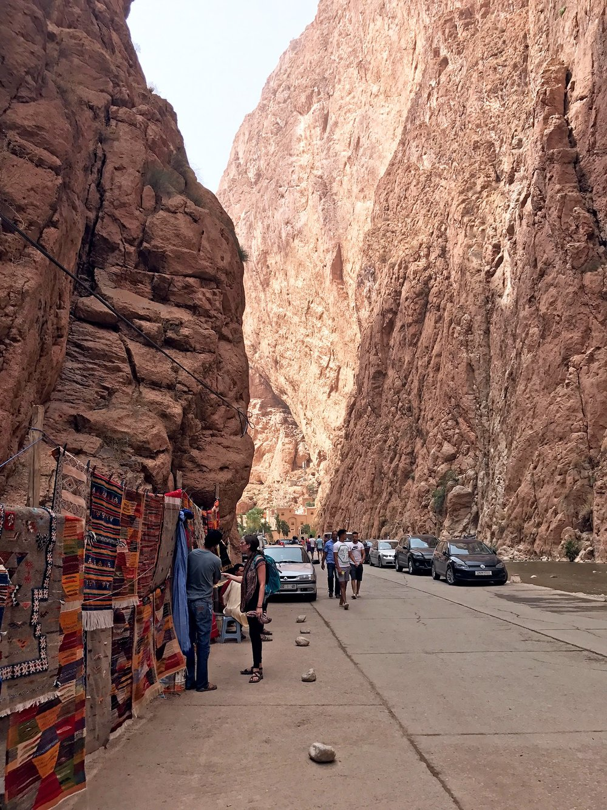
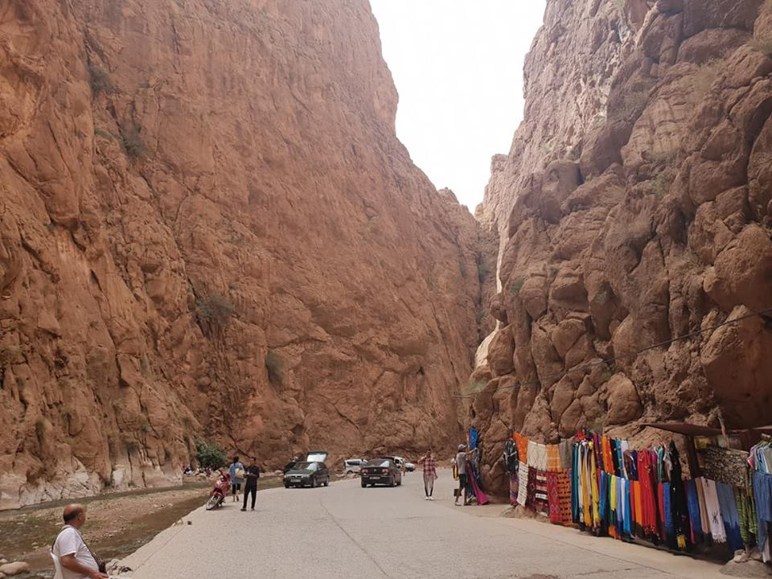
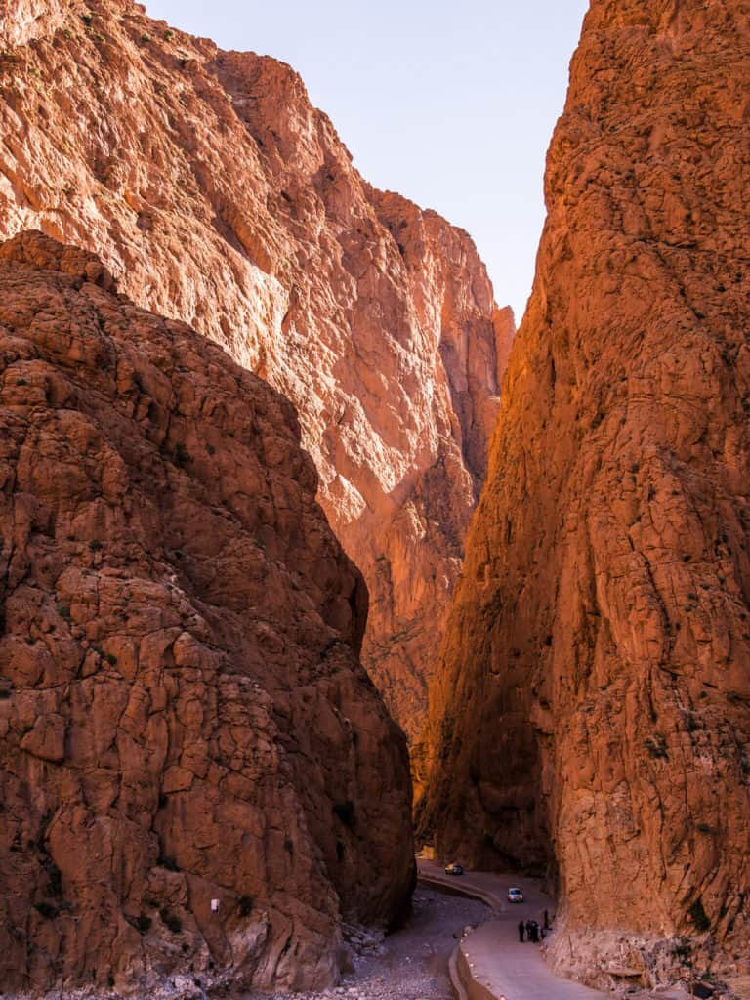
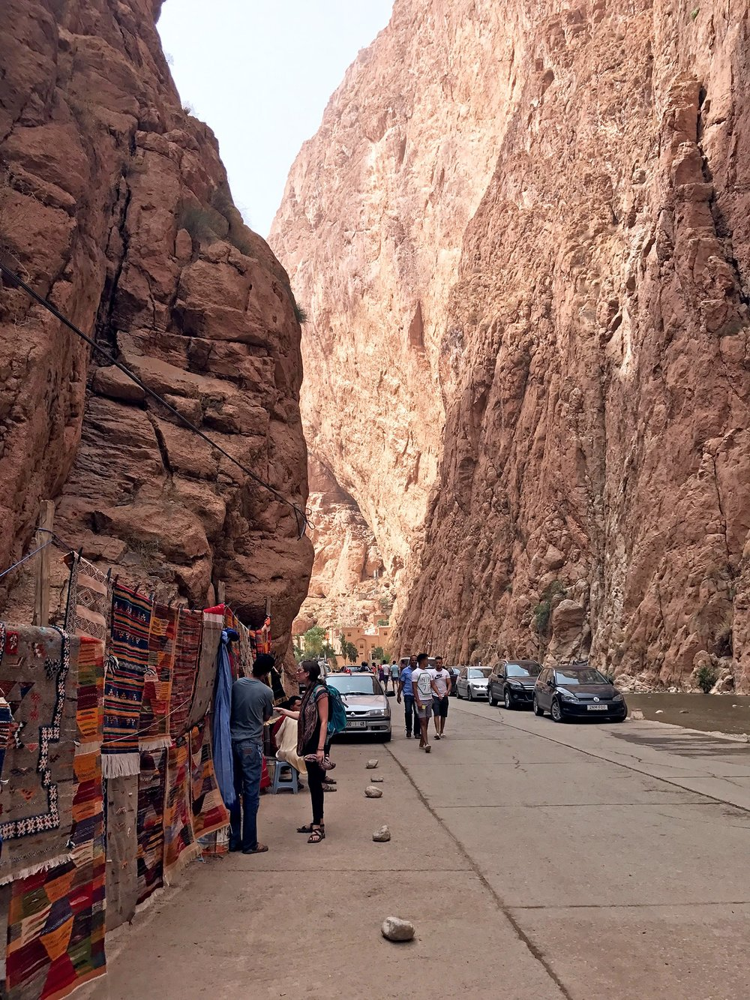
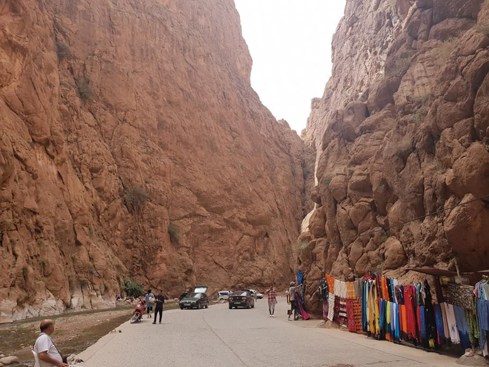
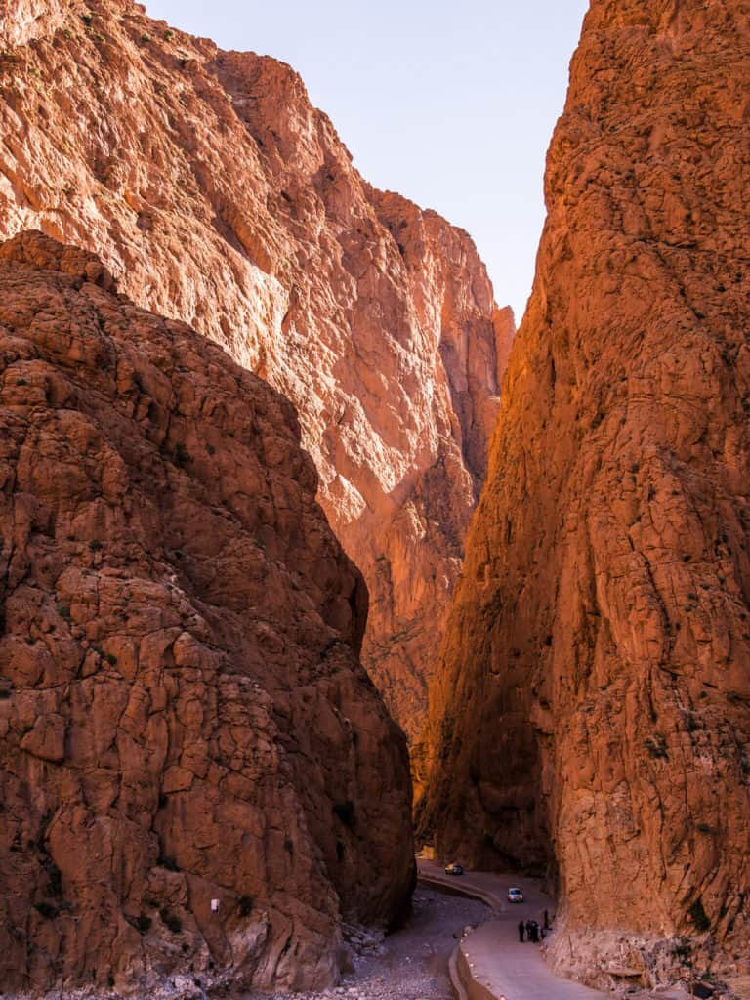

The road from Tinerhir passes green palmeraies (palm groves) and Berber villages until, 15km along, high walls of pink and grey rock close in around the road. The approach is thrilling, as though the doors of heaven were about to close before you
The best time to visit is in the morning, when the sunshine briefly illuminates the gorge in a golden moment of welcome. Souvenir vendors and tour buses clog the centre in afternoons, until it suddenly turns dark and bitterly cold. Through the gorge and 18km up the road is the Berber village of Tamtetoucht, with Imilchil some 95km beyond.
Here are the best hotels in the Todra Valley :
HÔTEL RESTAURANT LA KASBAH
Address : Bd Mohamed V, Tinghir 45800Phone number : +212524834471
Retour au Calme
Address : douar ihartane، Tinghir 45800Phone number : +212622436799
HOTEL RESTAURANT DAR ALMADINA
Address : AV MOHAMED V EN FACE MAROC TELECOM, 45800Phone number : +212524832033
Hôtel Saghro
Address : Avenue des FAR, BP46, 45800Phone number : +212524834181
Cap des Trois Fourches
The Cap des Trois Fourches, located to the north of the city, is an impressive mountainous promontory which extends over an area of 8,000 hectares and juts out about twenty km into the Mediterranean. It is home to idyllic beaches and coves to visit at least once in a lifetime.
Charrana Beach
The Nador region is known for the beauty of its paradisiacal beaches. The most spectacular and least known is Tcharrana beach located west of Cap des Trois Fourches and one hour from Nador. This small wild cove with turquoise water is distinguished by its depth, which does not exceed 1 meter. Access by car is difficult; it is preferable to go there by 4x4.
Tibouda village
The village of Tibouda, located 17 km from Charrana, is a small isolated fishing village which has kept all its authenticity. You can admire the boats of the fishermen floating there on a transparent water of a captivating blue, which contrasts with the raw beauty of the cliffs. A few minutes walk away is the beach of Tibouda, beautiful with its white sand, crystal clear water and wild aspect .
Cala blanca
A paradisiacal beach located to the south-east of Cap des Trois Fourches! Like all Cape Town beaches, its turquoise water and white sand will not leave you indifferent. This earthly paradise is one of the most beautiful sites for scuba diving.
Gourougou Forest
A visit to Nador cannot be done without a walk in the forest of Mont Gourougou which overlooks the city from its 900 m altitude. This small mountain with strange reliefs has an unequaled charm. We meet magots or Barbary macaques, some waterfalls but above all dense and rich vegetation. At its summit stands the Tower of Tazouda, an ancient fortress of the Amazigh guards.
Kariat Arekmane
In the village of Kariat Arekmane, you can taste good freshly caught fish in the few authentic restaurants in this village. A 5-minute walk away, you will find the beautiful beach of Arekmane with fine sand and the sublime Plage des Coquillages which offers you a unique and magnificent setting. They are renowned for the quality of the water, swimming is very pleasant there .
The Marchica Lagoon
The lagoon of Nador, also known under the name of Marchica, is one of the most important lagoons in the Mediterranean Sea with an area of 115 km2 and a length of 25 km. Identified as a site of biological and ecological interest, this " small sea " of great environmental value is one of the most beautiful natural sites in Morocco.
 




